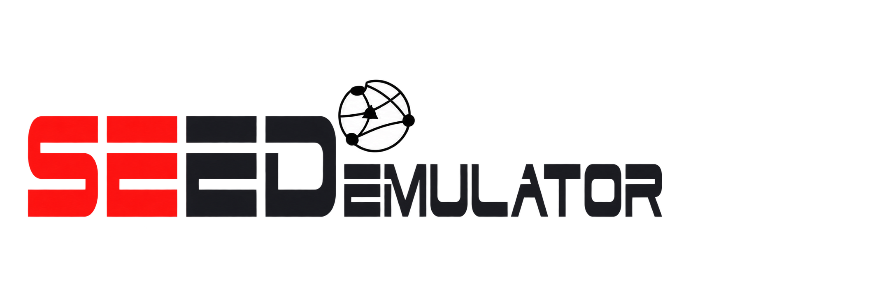
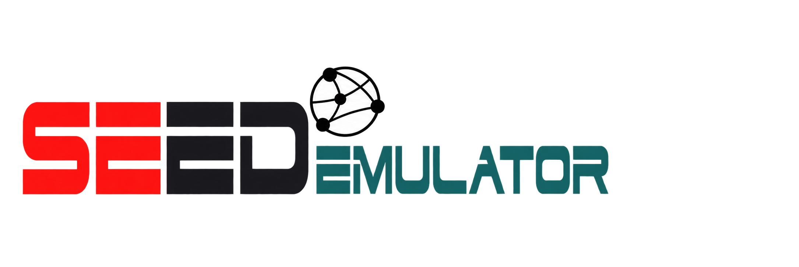

SEED Emulator · Logo 配色方案
同款浅色背景对比，重点改善 EMULATOR 的辨识度
推荐
01 · 纯黑
最接近 SEED Labs 参考
清晰、稳重

02 · 石墨灰
降低视觉重量
柔和、简洁
03 · 深青绿
呼应网站菜单栏
更有整体感

同款浅色背景对比，重点改善 EMULATOR 的辨识度
最接近 SEED Labs 参考
清晰、稳重

降低视觉重量
柔和、简洁
呼应网站菜单栏
更有整体感
